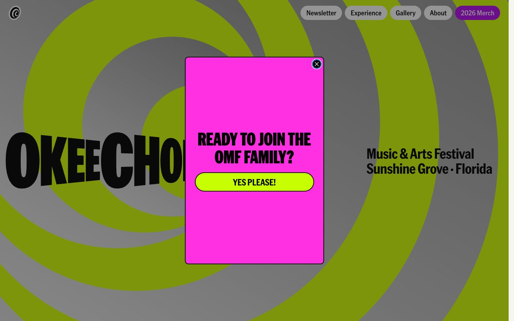

References / Website / 288
Okeechobee Music & Arts Festival website
A Florida festival site whose hero is a giant spiral of lime-green and gray rings behind a warped, bulging wordmark.
- Source
- okeechobeefest.com
- Creator
- Okeechobee Music & Arts Festival
- Style
- Psychedelic art (agent-proposed, not yet reviewed by a person)
- Moods
- Hypnotic, loud, playful
- Evidence
- Captured with
tools/capture.mjs(headless Chrome, 1440 × 900) on 28 September 2026 and inspected. The screenshot shows the first viewport; the measurement covers up to four screens. A magenta sign-up box covers about a sixth of the viewport and hides part of the wordmark; it does not dim the page. - Reviewed
- Rights
- Third-party work, stored with credit for commentary. License: unverified. Rights policy
Observed
- Broad concentric rings of lime green and mid gray fill the whole viewport, centered left of middle.
- The black wordmark OKEECHOBEE runs across the rings in heavy condensed capitals whose letters grow and shrink as if seen on a bulging surface.
- Music & Arts Festival and Sunshine Grove · Florida are set at right in a black condensed sans.
- Navigation items are gray pill-shaped buttons at top right, with one in purple.
- A magenta rectangle with a black outline asks READY TO JOIN THE OMF FAMILY? above a lime pill button.
Why it belongs
The page uses the entoptic ring motif at full scale, and the warped wordmark borrows the style’s habit of bending letters to a shape. Its lime and magenta accents clash, but the gray field keeps it cooler than a period poster.
Measured values: the rings are drawn as an image, so color.chromaticShare from computed styles is 0.14 while the screenshot measures 0.53; color.patternShare is 0 and type.centerShare is 0.14.
Borrow
Use concentric rings at viewport scale as the hero ground.
Warp a wordmark so letter height follows an imagined curved surface.
Shape navigation as pills to echo the round forms of the hero.
Measured
Machine-extracted by tools/extract-traits.js on . Full measurement.
- Type families
- American Grotesk (50%), American Grotesk Condensed (19%), AmericanGroteskCondensed (11%)
- Type scale ratio
- 1.2
- Median radius
- 7 px
- Mean chroma
- 0.14
- Palette
- #f6f5f0 69%
- #000000 15%
- #ff2fe2 13%
- #5d5d5d 1%
- #c7ff02 1%
- #0066cc 0%
- #141414 0%
- #ffffff 0%

